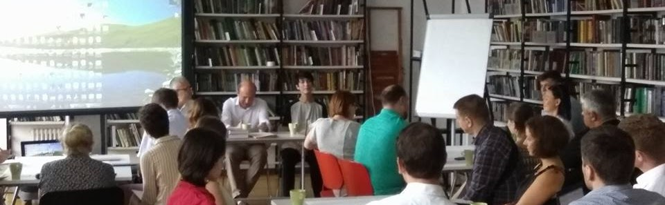

ЛекТОРИЙ
Схематизация
ЛекТОРИЙ
Семинары
British Higher School of Art and Design
курс “Системный подход к мышлению и деятельности”
(Осовский, 2012-2014),
фотоотчет
Академия передовых практик внедрения и поддержки SAP
(Осовский, 2014)
ДОП МГПУ
(Цветной бульвар) - лекция об СМД-подходе (Жадько, Осовский, 2015)
МПГУ
(на М.Пироговской) - семинар по визуализации (Мрдуляш, 2016)
МГПУ
(ВДНХ) - дисциплина “Схематизация” в рамках межвузовской олимпиады по управлению (Гайдамака, Осовский, Пинаев, 2016)
ДПО Школа дизайна НИУ ВШЭ
- интенсив “Инфографика и презентация аналитических данных” (Горбань, 2016-2017)
- курс дополнительного образования "Визуальное мышление" (Горбань, Логвин, 2016-2017)
- магистратура по инфографике, "Визуальное мышление" (Горбань, 2017)
ВШГА МГУ
- занятия по схематизации (Инфимовская, Осовский, 2016-2017)
Форсайт-школа АСИ
(Мрдуляш, Осовский 2016)
Лекторий ЦСР
(Осовский, 2016)
ВятГУ
лекция “Образы будущего и технология графического мышления”
(Донсков, Филинков, Осовский, 2017)
ВШГУ РАНХиГС
- Школа модераторов (Мрдуляш, 2017)
НОЧУВО МЭИ
(Тольятти) - курсы “Схематизация”, “Визуальные коммуникации” (Мокроусова, 2016-2017)
ДВФУ. Университет 20:35
(Владивосток)
Графические методы мышления
(Осовский, 2018)
Обновление страницы:
📺 Видео

